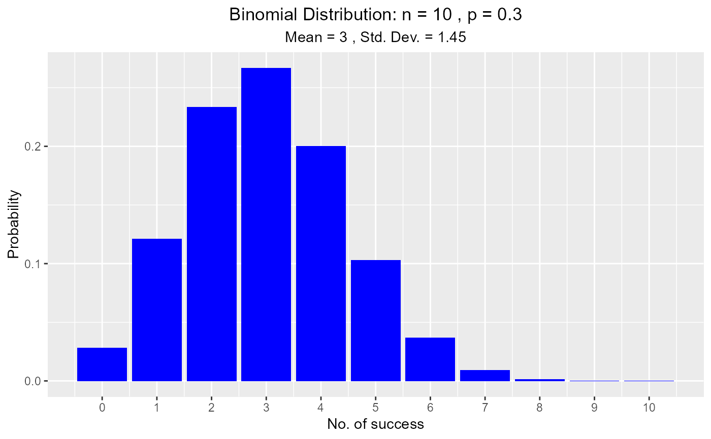
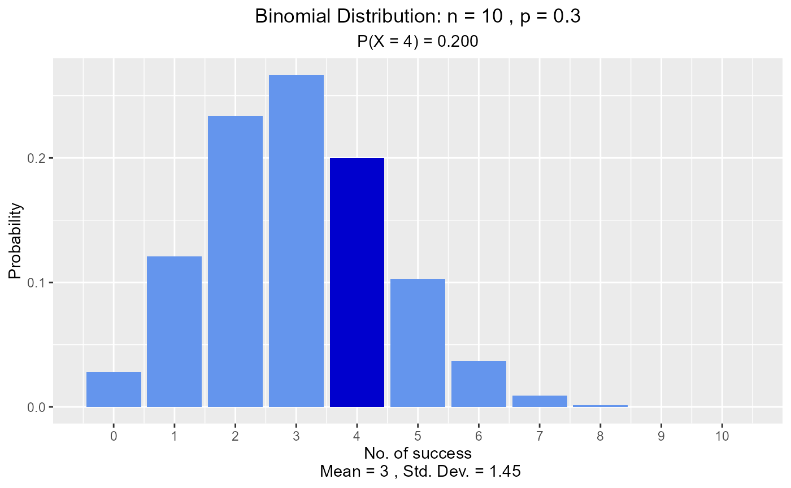
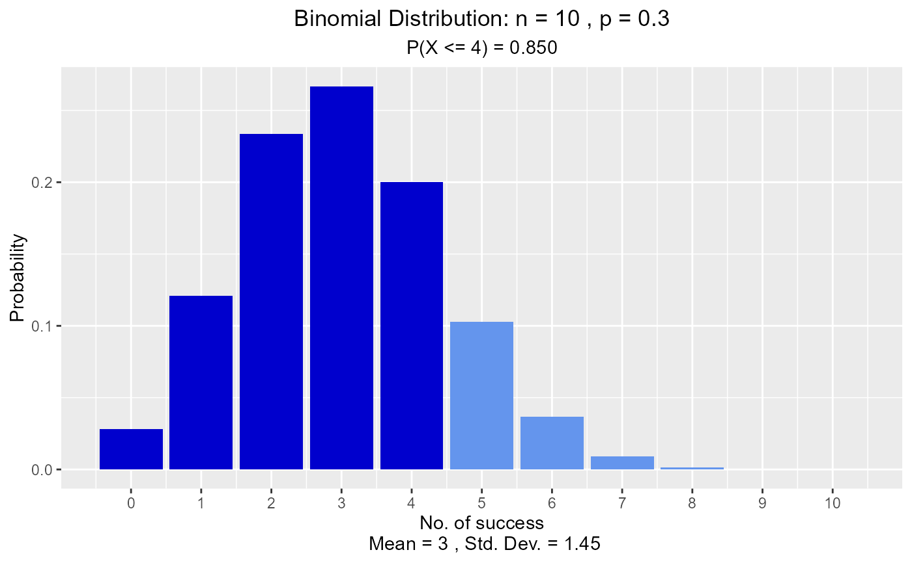
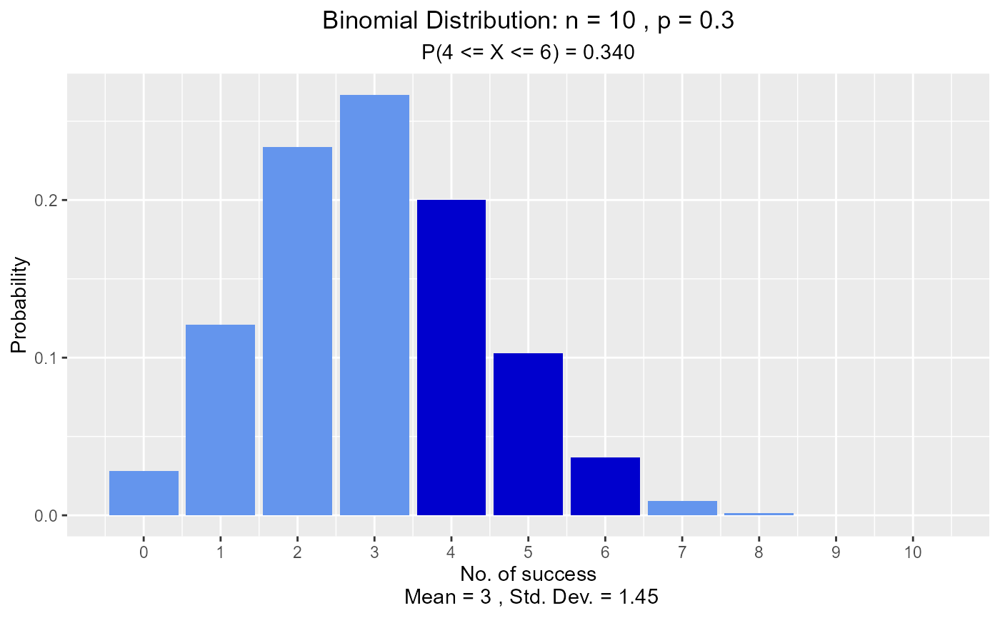
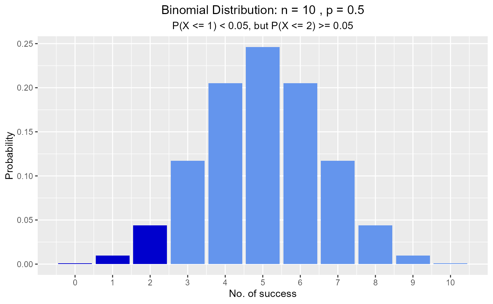
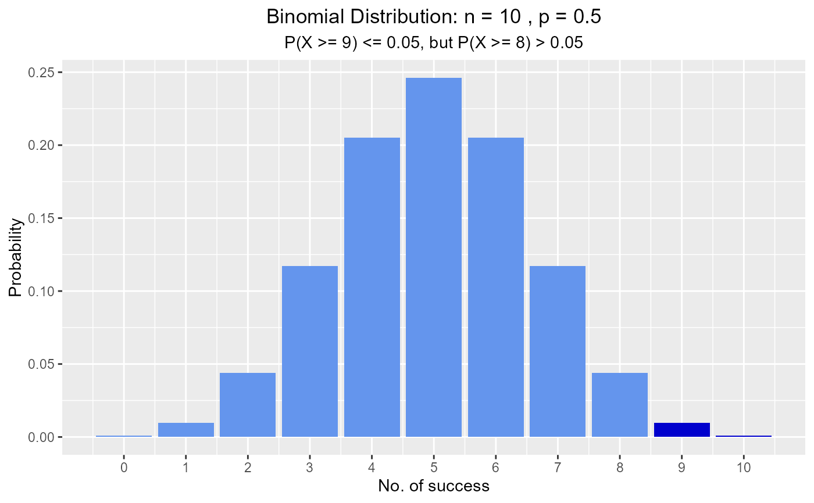

Visualize how changes in number of trials and the probability of success affect the shape of the binomial distribution. Compute & visualize probability from a given quantile and quantiles out of given probability.
Arguments
- n
Number of trials (a single non-negative whole number).
- p
Probability of success in each trial.
- print_plot
logical; if
TRUE, prints the plot else returns a plot object.- s
Number of successes: whole numbers in
[0, n]only. Zero andnare counts of successes like any other; usepbinom()for an arbitrary threshold outside that range. Fortype = "interval", two values in increasing order.- type
Lower/upper/exact/interval.
- tp
Tail probability for quantile calculation, strictly between 0 and 1 and either equal to a cumulative-probability jump or more than 1e-12 away from it. For
type = "lower"the cutoff is the smallestkwithP(X <= k) >= tp(asqbinom()); fortype = "upper"it is the smallestkwithP(X > k) <= tp, and the bars withx > kare shaded.
Details
Probabilities below 1e-10% (including underflows) are shown as < 1e-10%, with the corresponding upper display > 99.9999999999%.
Every bar is one count while n + 1 counts fit in the plotting
grid (2001 bars). A wider support is drawn in approximately 2001 bins
of counts; event boundaries can split up to two bins, each bar showing the exact probability of its bin, with a caption
that discloses the grouping; the grid therefore has a bounded number of
points whatever n is. Probabilities, quantiles and shaded masses always
come from dbinom(), pbinom() and qbinom().
Examples
# visualize binomial distribution
vdist_binom_plot(10, 0.3)

# visualize probability from a given quantile
vdist_binom_prob(10, 0.3, 4, type = 'exact')

vdist_binom_prob(10, 0.3, 4, type = 'lower')

vdist_binom_prob(10, 0.3, 4, type = 'upper')
vdist_binom_prob(10, 0.3, c(4, 6), type = 'interval')

# visualize quantiles out of given probability
vdist_binom_perc(10, 0.5, 0.05)

vdist_binom_perc(10, 0.5, 0.05, "upper")
